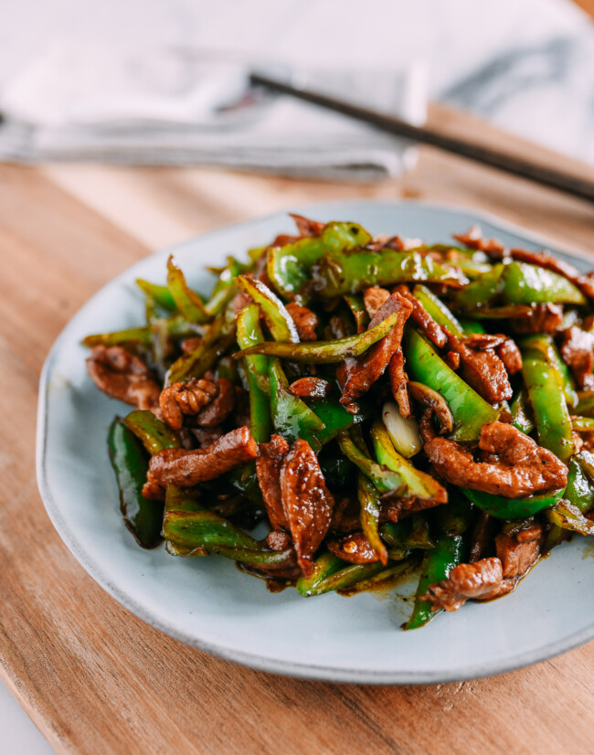

Pork Stir Fry

Description
This recipe is for a Chinese style pork stir fry recipe that takes
around 30 mins to complete. You will certainly melt your taste buds eating this savory dish.
Ingredients
- 1 pound ground pork
- Stir Fry Vegetables
- 1/2 cup of soy sauce
- 3 tablespoon of brown sugar
- 1 tablespoon of rice vinegar
- 1/2 teaspoon red pepper fakes
- 1 tablespoon of garlic paste
- 1 tablespoon of ginger paste
- Sliced Green Onions
Steps
- Whisk together the soy sauce, brown sugar, garlic, ginger, vinegar and red pepper in a bowl.
- In a large skillet, brown the ground pork.
- Add the vegetables and cook for about 5 minutes, stirring occasionally.
- Pour in the sauce and noodles or rice.
- Let the stir fry cook for about 2-3 minutes, until piping hot.
- Garnish with as much green onions as you want.